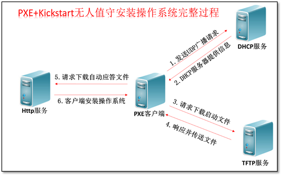

PXE安装只是实现BIOS系统的自动化安装，对于UEFI的不支持，对于UEFI的可以使用cobbler
cobbler实现系统自动化安装cobbler自动化系统安装
DNS搭建的相关文档

搭建DHCP和在centos7实现基于PXE安装centos7和centos6(centos6上原理类似)
PXE+DHCP服务
关闭防火墙和SELINUX
yum install httpd tftp-server dhcp syslinux system-config-kickstart -y
DHCP服务器
基于UDP协议(dhcp服务器端口：67、dhcp客户端端口：68)
DHCP: （Dynamic Host Configuration Protocol）
动态主机配置协议
局域网协议，UDP协议(67端口)
主要用途：
用于内部网络和网络服务供应商自动分配IP地址给用户
用于内部网络管理员作为对所有电脑作集中管理的手段
使用场景
自动化安装系统
解决IPV4资源不足问题
DHCP的工作流程
1. 客户端发起一个DHCP DISCOVER请求发现当前局域网中DHCP的服务器
2. DHCP服务器收到客户端请求后，响应DHCP OFFER，确定一个没有使用的IP地址给客户端
3. 客户端收到后，发送DHCP REQUEST确定使用该地址
4. 最后DHCP服务器发送DHCP ACK确认客户端的连接后，发送DHCP服务器的相关配置给客户端
地址
DHCP DECLINE ：客户端到服务器，指示地址已被使用
DHCP RELEASE：客户端到服务器，放弃网络地址和取消
剩余的租约时间
DHCP INFORM：客户端到服务器, 客户端如果需要从DHCP
服务器端获取更为详细的配置信息，则发送Inform报文向
服务器进行请求，极少用到
同网段多DHCP服务
DHCP服务必须基于本地
先到先得的原则
续租
50% ：租赁时间达到50%时来续租，刚向DHCP服务器发向新的DHCPREQUEST请求。如果dhcp服务没有拒绝的理由，则回应DHCPACK信息。当DHCP客户端收到该应答信息后，就重新开始新的租用周期
87.5%：如果之前DHCPServer没有回应续租请求，等到租约期的7/8时，主机会再发送一次广播请求
跨网段
RFC 1542 Compliant Routers
dhcrelay: 中继
相关协议
Arp
rarp
DHCP服务器的实现
Linux DHCP协议的实现程序：dhcp, dnsmasq（dhcp,dns）
1.实现DHCP的软件有两个：dnsmasp,这个软件是安装系统是默认的一个
可以同时提供dns和dhcp两种服务，不是很专业
如：ss -ntl 看到的默认就有dnsmasp服务
LISTEN 0 5 192.168.122.1:53
users:(("dnsmasq",pid=1506,fd=6))
2.DHCP更专业
Dhcp Server相关配置文件：
/etc/dhcp/dhcpd.conf --->主要配置文件
/usr/lib/systemd/system/dhcpd.service --->服务名
/usr/sbin/dhcpd --->dhcp的主程序
/etc/dhcp/dhcpd.conf --> /etc/rc.d/init.d/dhcpd
/etc/dhcp/dhcpd6.conf--> /etc/rc.d/init.d/dhcpd6
/var/lib/dhcpd/dhcpd.leases --->租出去的地址信息库文件
/usr/sbin/dhcrelay
/etc/rc.d/init.d/dhcrelay
dhcp server:67/udp
dhcp client: 68/udp
dhcpv6 client:546/udp
Dhcp client
dhclient
自动获取的IP信息： /var/lib/dhclient
dhcp配置
安装DHCP完,默认是启动不了的，因为配置文件dhcpd.conf是空的
该文件中定义了：
1.默认续租时间和最长租期
2.DHCP默认分配的网段和分配的IP地址范围
3.DHCP服务提供的默认网关地址和DNS地址
1.先通过模板生成新的配置文件
cp /usr/share/doc/dhcp*/dhcpd.conf.example /etc/dhcp/dhcpd.conf
2.配置文件/etc/dhcp/dhcpd.conf
全局配置：
default-lease-time //默认租期时间
max-lease-time //最大租期时间
子网配置：
subnet IPADDR netmask NETMASK { //定义子网
range IPRANG; //定义IP的范围
option route IP; //定义默认网关
option domain-name-servers DNS;//定义默认DNS
filename //定义引导文件名称
示例：
filename "pxelinux.0";
next-server //提供引导文件的服务器的IP地址
示例：
next-server 192.168.56.81;
}
单个主机配置：
host 名称 {
hardware ethernet //主机的MAC地址
fixed-address //固定分配一个IP地址
}

上面是主要配置内容，在dhcpd.conf中还可以把指定的mac地址与IP绑定
host passacaglia {
hardware ethernet 00:0c:29:af:45:f7;
fixed-address 192.168.56.80
}
重新获取地址：dhclient -d，如出现bound new ip表示dhcp服务器正常启动

地址分配记录 /var/lib/dhcpd/dhcpd.leases
TFTP
yum install tftp-server，服务器端
yum install tftp，客户端
默认监听 69/udp
默认路径,存放下载上传的路径:系统所需要的文件 /var/lib/tftpboot
centos7和centos6上安装tftp是由区别的
centos7上需要安装tftp-server服务-->UDP69端口
yum install tftp-server
systemctl start tftp
在centos6上安装和telnet是一个道理，都依赖于xinetd
chkconfig tftp on--> /etc/xinetd.d/tftp配置文件
service restart xinted
http配置
systemctl enable httpd
systemctl start httpd
mkdir /var/www/html/7/{os,ksdir}
mount /dev/sr0 /var/www/html/7/os
准备kickstart文件
/var/www/html/7/ksdir/7.cfg 注意：权限
PXE介绍
PXE：
Preboot Excution Environment 预启动执行环境
Intel公司研发
基于Client/Server的网络模式，支持远程主机通过网络从远端服务器下载
映像，并由此支持通过网络启动操作系统
PXE可以引导和安装Windows,linux等多种操作系统

实验：在centos7实现基于PXE安装centos7和centos6
1.安装前准备：关闭防火墙和SELINUX，DHCP服务器静态IP
2.安装软件包
httpd tftp-server dhcp syslinux system-config-kickstart
httpd:实现yum源
tftp-server：实现网络下载的文件
syslinux: 准备pxelinux.0文件
备注：centos6上是安装syslinux-nonlinux
system-config-kickstart制作kickstart软件，建议自己制作
3.配置文件共享服务：
准备centos7¢os6的yum源
systemctl enable httpd
systemctl start httpd
mkdir -pv /var/www/html/centos/{6,7}/os/x86_64
mount /dev/sr0 /var/www/html/centos/7/os/x86_64
mount /dev/sr1 /var/www/html/centos/6/os/x86_64
4.准备kickstart文件
拷贝已经安装机器上的anaconda文件，按照自定义稍微修改，放到http目录下
注意：644权限
cp anaconda-ks.cfg /var/www/html/ksdir/ks7-min.cfg
cp anaconda-ks.cfg /var/www/html/ksdir/ks7-min.cfg
ks应答文件的内容可以用system-config-kickstart或者anaconda修改就行了
最好是通过system-config-kickstart做一个应答文件，通过界面更深刻理解
每一项代表的意义
大概内容如下：(最后附件的有详细的ks文件内容)
url --url=http://192.168.34.7/centos/7/os/x86_64/
text
firewall --disabled
selinux --disabled
clearpart --all --initlabel
zerombr
reboot
%packages
@core
%end
5.配置tftp服务
systemctl enable tftp.socket
systemctl start tftp.socket
6.配置DHCP服务
cp /usr/share/doc/dhcp-4.2.5/dhcpd.conf.example /etc/dhcpd/dhcpd.conf
vim /etc/dhcp/dhcpd.conf
option domain-name "example.com";
default-lease-time 600;
max-lease-time 7200;
subnet 192.168.34.0 netmask 255.255.255.0 {
range 192.168.34.20 192.168.34.100;
option routers 192.168.34.1;
option domain-name-servers 6.6.6.6;
next-server 192.168.34.103;
filename "pxelinux.0";
}
systemctl enable dhcpd
systemctl start dhcpd
7.准备PXE相关文件
放pxelinux.0的专用目录，启动菜单
mkdir /var/lib/tftpboot/pxelinux.cfg/
分别存放6和7的vmliuz和initrd.img文件
mkdir linux{6,7}
拷贝6和7安装必要文件
cp /var/www/html/centos/6/os/x86_64/isolinux/{vmlinuz,initrd.img}
/var/lib/tftpboot/linux6/
cp /var/www/html/centos/7/os/x86_64/isolinux/{vmlinuz,initrd.img}
/var/lib/tftpboot/linux7/
cp /usr/share/syslinux/{pxelinux.0,menu.c32} /var/lib/tftpboot/
将光盘里的启动菜单拷贝到并改名为default
cp /var/www/html/centos/7/os/x86_64/isolinux.cfg /var/lib/tftpboot/
pxelinux.cfg/default
拷贝完所有文件,文件列表如下：
/var/lib/tftpboot/
.
├── linux6
│ ├── initrd.img
│ └── vmlinuz
├── linux7
│ ├── initrd.img
│ └── vmlinuz
├── menu.c32
├── pxelinux.0
└── pxelinux.cfg
└── default
8.准备启动菜单
菜单项可以自定义多个，如只有mini7和mini6的，还有必须要有本地硬盘启动的菜单项
vim /var/lib/tftpboot/pxelinux.cfg/default
default menu.c32
timeout 100
menu title PXE Install CentOS
label mini7
menu label ^Auto Install Mini CentOS 7
kernel linux7/vmlinuz
append initrd=linux7/initrd.img ks=http://192.168.34.7/ksdir/ks7-mini.cfg
label mini6
menu label ^Auto Install Mini CentOS 6
kernel linux6/vmlinuz
append initrd=linux6/initrd.img ks=http://192.168.34.7/ksdir/ks6-mini.cfg
label local
menu default
menu label Boot from ^local drive
localboot 0xffff.
9.准备完所有的文件和软件后，启动所有的服务，就可以测试PXE安装了。
centos7和centos6的ks应答文件模板
通过ystem-config-kickstart做一个应答文件
也可以修改anaconda-ks.cfg文件
ks6-mini.cfg
install
url --url=http://192.168.34.103/centos/6/os/x86_64/
#httpd的yum源路径
lang en_US.UTF-8
keyboard us
text #纯文本安装
reboot #安装完重启
network --onboot yes --device eth0 --bootproto dhcp --noipv6
rootpw --iscrypted $6$6zeqEsKimGywyY3J$ngSoHUIrLaydTMIwnYX9tg4HOeOCXogU03miaQIc8sOwmq5N6.fPk3Jrmouns8VOekZkn0YQjQkt
JjA57WrZO0
firewall --service=ssh 关闭防火墙
authconfig --enableshadow --passalgo=sha512
selinux --enforcing 关闭selinux
timezone Asia/Shanghai 时区信息
bootloader --location=mbr --driveorder=sda --append="crashkernel=auto rhgb quiet"
# The following is the partition information you requested
# Note that any partitions you deleted are not expressed
# here so unless you clear all partitions first, this is
# not guaranteed to work
clearpart --all 清空分区信息
zerombr 清空mbr
#自定义的分区信息
part /boot --fstype=ext4 --size=1024
part / --fstype=ext4 --size=50000
part /data --fstype=ext4 --size=30000
part swap --size=2048
#自定义的分区信息
%packages
@core
%end 只安装最基本的核心包，后面也可以加上安装后脚本
ks7-mini.cfg
auth --enableshadow --passalgo=sha512
url --url=http://192.168.34.103/centos/7/os/x86_64/
text
firstboot --enable
ignoredisk --only-use=sda
keyboard --vckeymap=us --xlayouts='us'
lang en_US.UTF-8
network --bootproto=dhcp --device=ens33 --onboot=off --ipv6=auto --activate
network --hostname=centos7.localdomain
rootpw --iscrypted $6$j2QVLmDO2xasQEW0$xEvr1jyj1mHs0HBtCc7jD73r6u4NrQCxwVoAu.SMXhwm8GiKBHq5ETZ2zFxP4rFsNavYbG0u6Gq13
Igxrn1Ry.
firewall --disabled
selinux --disabled
services --enabled="chronyd"
timezone Asia/Shanghai --isUtc
user --name=test --password=$6$Awcwirg.mougtUlL$Yr1a9e2Vfs2k/Nizdn/ZeiunlsU.rJAmI1vhp1iafeccRt48h3PVIlnVwGvKPPt4dVum
a/W32jzYIsn1XCrva. --iscrypted --gecos="test"
bootloader --append=" crashkernel=auto" --location=mbr --boot-drive=sda
clearpart --all --initlabel
zerombr
reboot
part / --fstype="xfs" --ondisk=sda --size=51200
part /boot --fstype="xfs" --ondisk=sda --size=1024
part swap --fstype="swap" --ondisk=sda --size=4096
part /data --fstype="xfs" --ondisk=sda --size=30720
%packages
@core
%end